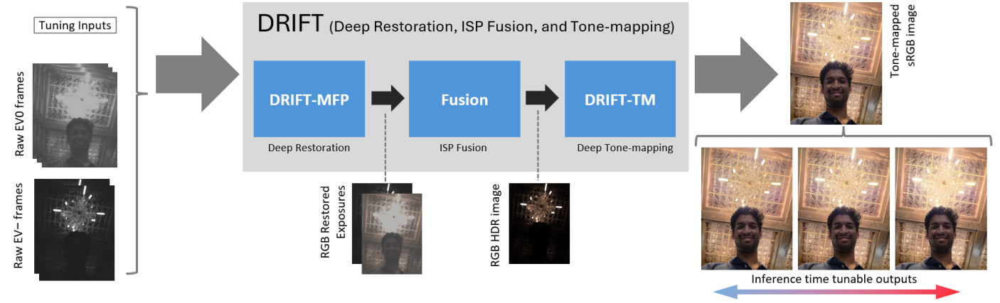
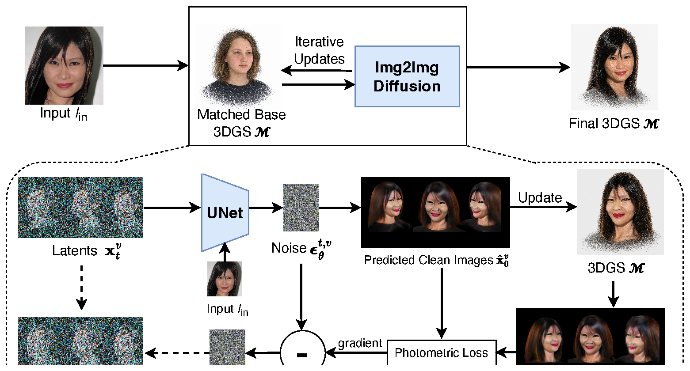
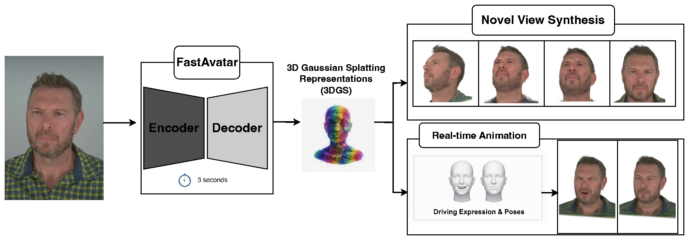
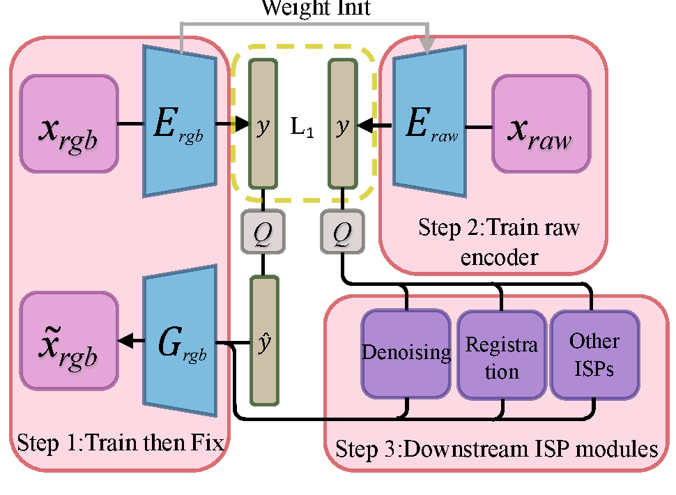

Samsung Research America
At the MPI Lab, Samsung Research America, my work centers on AI-driven camera image signal processing (ISP) and computational photography for the Galaxy line of mobile devices. This includes multi-frame restoration, learned ISP, tone-mapping, and 3D imaging, often in collaboration with university partners.
DRIFT: Deep Restoration, ISP Fusion, and Tone-mapping
Samsung Research America · CVPR Workshops 2026

DRIFT is an efficient AI mobile camera pipeline that generates high-quality RGB images from hand-held raw captures. A first-stage Multi-Frame Processing network, trained with an adversarial perceptual loss, performs multi-frame alignment, denoising, demosaicing, and super-resolution. Its output is then processed by a novel deep-learning tone-mapping stage (DRIFT-TM) that supports tone tunability, maintains tone-consistency with a reference pipeline, and runs efficiently on high-resolution images on-device.
Splatshot: 3D Face Avatar Generation from a Single Unconstrained Photo
Samsung Research America & Rice University · arXiv 2025

Splatshot is a training-free framework for reconstructing a photorealistic 3D face avatar from a single unconstrained photo. It integrates 3D Gaussian Splatting with a 2D diffusion prior during denoising: at each timestep it predicts a clean image from the noisy latent, refits the 3DGS model to that prediction, and backpropagates the photometric difference between the re-rendered and predicted images to guide sampling. This per-step 3D feedback loop steers generation toward outputs that are simultaneously 3D-coherent, identity-preserving, and photorealistic — combining the geometric consistency of explicit 3D representations with the realism of 2D diffusion.
FastAvatar: Instant 3D Gaussian Splatting for Faces from Single Unconstrained Poses
Samsung Research America & Rice University · arXiv 2025

FastAvatar produces a 3D Gaussian Splatting representation of a face from a single image captured under unconstrained pose, enabling near-instant 3D head avatar creation without per-subject optimization. The method bypasses the slow, optimization-heavy fitting typical of 3D avatar pipelines, making it practical for on-device and interactive applications.
CoDISP: Exploring Compressed Domain Camera ISP with RGB-guided Encoder
Samsung Research America & MIT · CVPR Workshops 2024

CoDISP introduces a camera ISP pipeline that operates on a learned compressed latent domain to conserve memory for high-resolution mobile sensors. An RGB-guided encoder defines a compressed latent that preserves both semantic information and high-frequency detail, and a transfer-learning strategy maps raw images into this domain. Downstream tasks — demosaicing, single- and multi-frame denoising, and registration — are all performed in the compressed domain, reducing memory demands for super-high-resolution cameras.